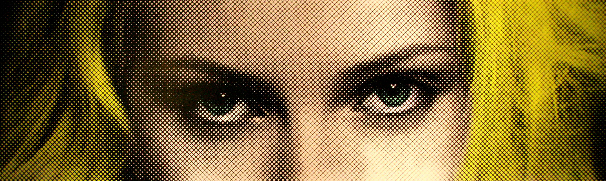
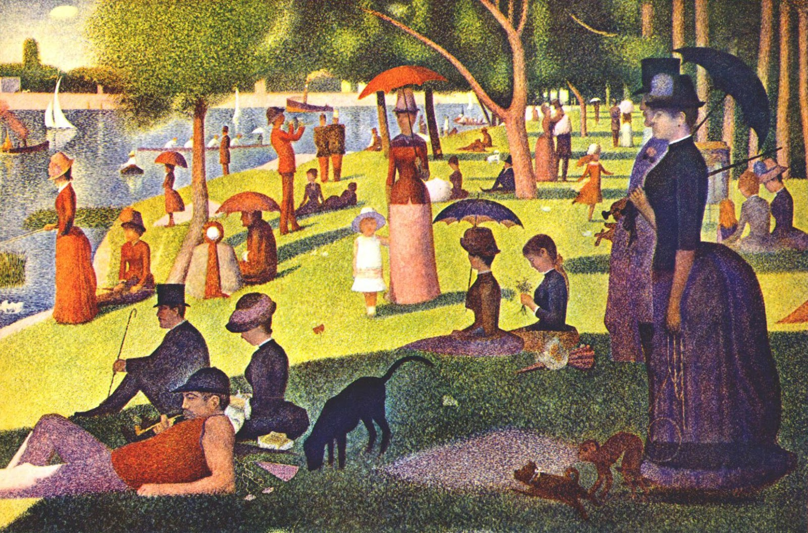

HALTONES
Definition & History
Originally the process of Halftone used dots of different sizes to represent the different tones of color in grey tones to create an image. The process also used space and weigh to create a gradient like look. As color came into play with photography Halftone changed to where each dot layer represented a color. The different sizes of dot represented the amount of each color (CYMK) in the photo. In a way it creates an optical illusion. Although the dots were created all separately, it looks like all the colors are combined smoothly and look as if it was done all at one time.
Pointalism

Pointalism is a art technique that was created in 1886 by Georges Seurat and Paul Signac. It is very similar to the Halfton technique because of the use of the dots to create an image. The technique involves using distinct small dots of color in patterns to form the image.
My Project


After I found the original photo to the left I then opened the photo in photoshop and munipulated it using a filter affect called Half Tone. This gave me the dot created image electronically with each color (CYMK) seperated on different layers. After that I printed each colors Halftone dot image.
From there I moved onto recreating each color's Halftone dot layout. Each color was printed at a different angle to help with creating the illusion of the colors smooth unified look. I started with yellow because it was the lightest and also the most dominant in the photo. I moved onto the Cyan and Magenta after. Finally I finished it off with the black.